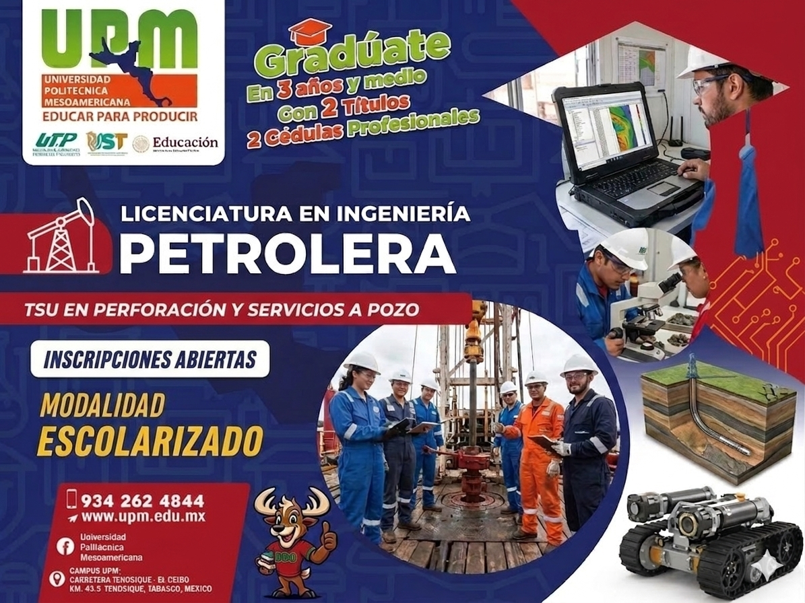

La Ingeniería Petrolera forma profesionistas capaces de participar en las actividades de exploración, perforación, producción y aprovechamiento de los hidrocarburos. Durante su formación los estudiantes desarrollan conocimientos en matemáticas, física, geología, perforación de pozos, producción petrolera y seguridad industrial. El modelo educativo de la Universidad Politécnica Mesoamericana permite obtener primero el título de Técnico Superior Universitario (TSU) y posteriormente continuar los estudios para obtener el grado de Ingeniería.
El aspirante deberá contar con:
Además deberá ser capaz de:
El Ingeniero Petrolero se caracteriza por su alto nivel profesional, sustentado en principios y valores como honestidad, responsabilidad, lealtad y compromiso social.
Contará con conocimientos, habilidades y destrezas para desempeñarse en las áreas de exploración, perforación y producción de hidrocarburos, optimizando los recursos y aplicando estrategias modernas de la industria petrolera.
El Ingeniero Petrolero tiene amplias oportunidades laborales en la región sur-sureste del país y en otras regiones petroleras.